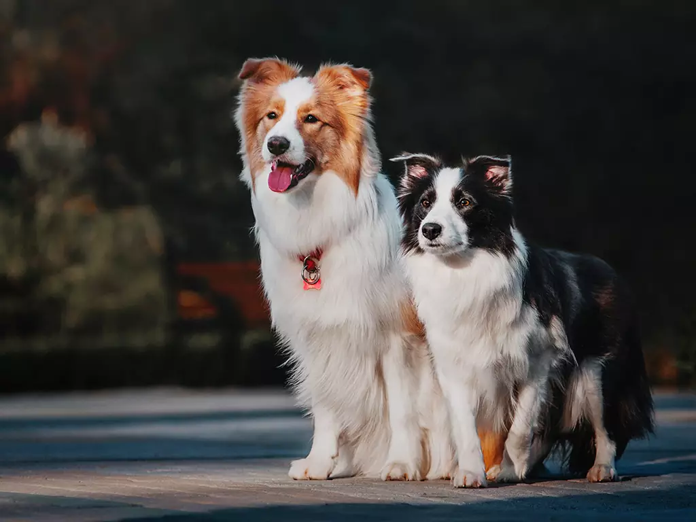

Border collie

| Raça |
Tamanho |
Expectativa de vida |
País de origem |
| Border Collie |
46-56 cm |
10-17 anos |
Grã-Bretanha |
Border collie
A raça ocupa o primeiro lugar no ranking mais conhecido de inteligência canina, elaborado por Stanley Coren.
Além de muito esperta, a raça tem um grande instinto protetor. É muito fácil treinar um border collie: devido à união entre inteligência
e afeto, ele se destaca entre muitos cachorros na capacidade de entender ordens e colocá-las em prática.
Todo mundo tem aquele amigo que gosta de reunir o grupo: no mundo canino, o border collie realiza muito bem esse papel. A raça ficou conhecida
por pastorear ovelhas e auxiliar na segurança das fazendas. E, graças a esse instinto único de proteção, conquistou não somente as grandes famílias
do campo, como também caiu no gosto de todos que desejam ter um amigo de quatro patas.